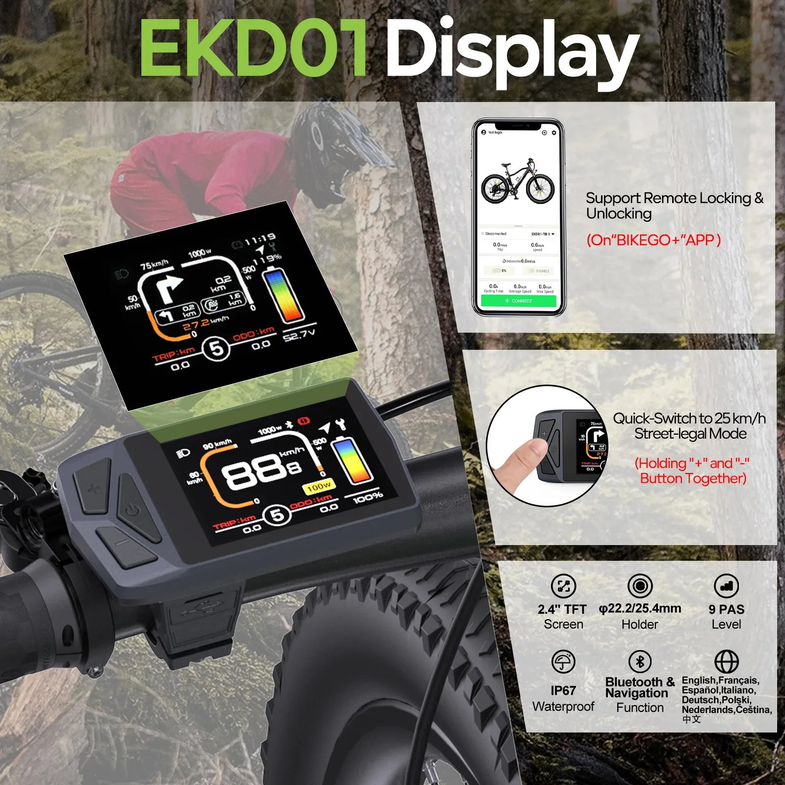
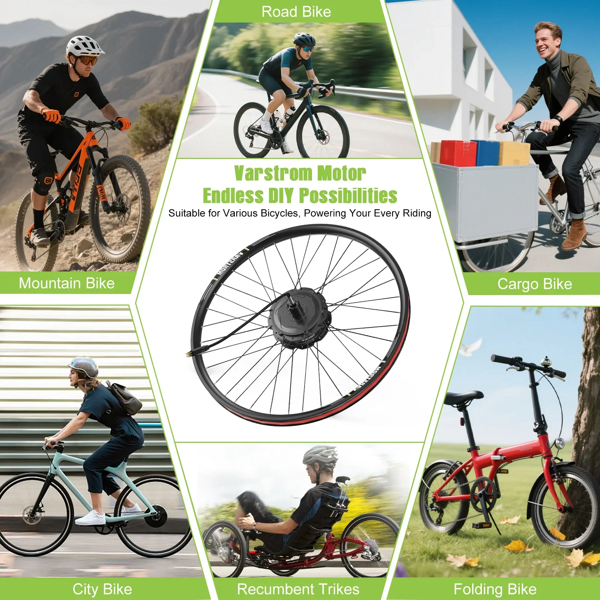
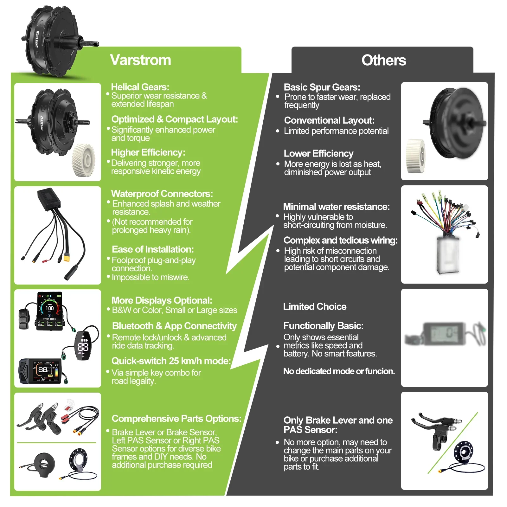
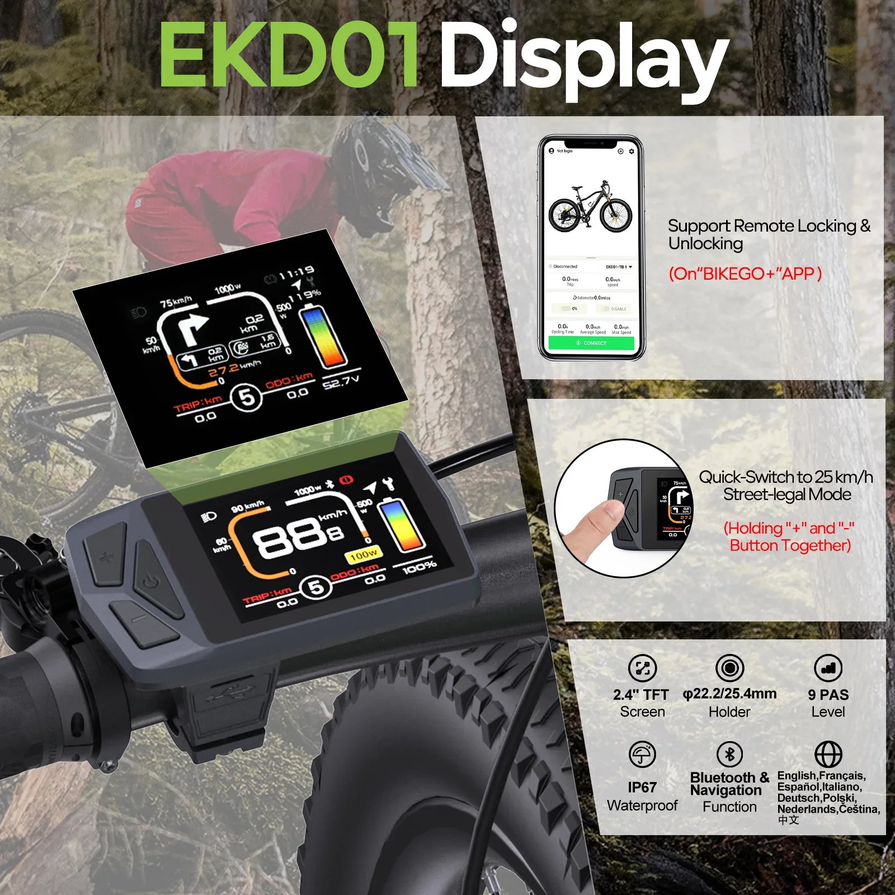
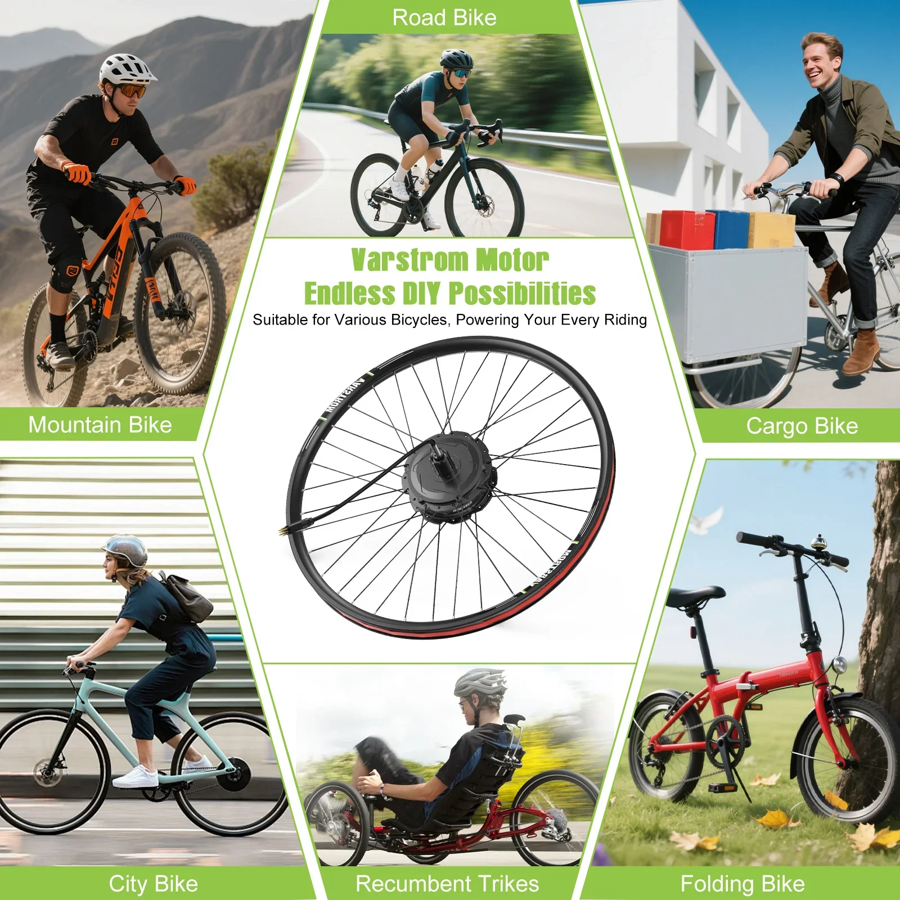
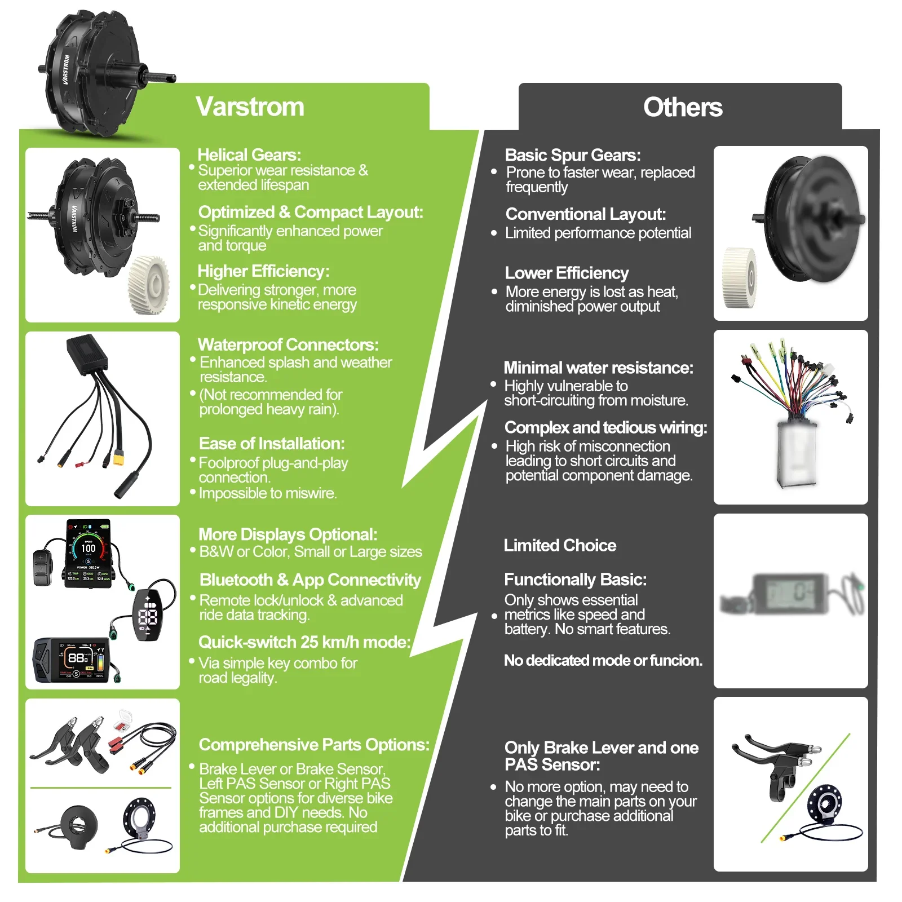

Kit de conversie pentru motor cu butuc BAFANG Varstrom, 750W/500W, 48V, tracțiune spate, versiune performantă 125XVH, 20"-29" 700C
Dezlănțuie-ți potențialul ciclist cu kitul de conversie Varstrom Hub Motor Ebike, o modalitate puternică și eficientă de a transforma bicicleta ta într-o minune electrică. Acest kit de înaltă performanță este conceput pentru cicliștii care caută viteză exuberantă și urcări fără efort, transformând fiecare călătorie într-o aventură palpitantă.
Dispunând de un motor robust de 750 W pe roata spate și un sistem de baterii fiabil de 48 V, kitul de conversie Varstrom Hub Motor oferă o putere impresionantă. Experimentează o accelerație lină, cucerește cu ușurință pante abrupte și bucură-te de o autonomie extinsă pentru toate aventurile tale.
- Motor puternic de 750 W: Urcați fără efort dealurile și atingeți viteze amețitoare.
- Opțiune versatilă de 500 W:Alegeți puterea de ieșire care se potrivește cel mai bine nevoilor dumneavoastră.
- Sistem de baterii durabil de 48 V: Experimentați o autonomie extinsă pentru călătorii mai lungi.
- Compatibil cu roți 700C (20-29 inch): Integrare perfectă cu o gamă largă de dimensiuni de biciclete.
Kitul de conversie pentru biciclete electrice cu motor cu butuc Varstrom este proiectat cu precizie și calitate, oferindu-vă o soluție fiabilă și durabilă pentru nevoile dumneavoastră de ciclism electric.
Kitul de conversie pentru biciclete electrice cu motor Varstrom Hub vă permite să transformați bicicleta tradițională într-o bicicletă electrică puternică. Acest kit este conceput pentru cicliștii pasionați care caută performanțe îmbunătățite și aventuri palpitante.
- Putere maximă de 750 W: Experimentați o accelerație exaltantă și cuceriți dealurile abrupte cu ușurință.
- Putere continuă de 500 W: Bucurați-vă de o livrare constantă a puterii pentru o deplasare fără efort pe distanțe lungi.
- Tensiune de sistem de 48 V: Oferă o combinație puternică de viteză și cuplu pentru o experiență de condus impresionantă.
- Amplasarea motorului pe butucul roții din spate: Oferă putere directă către roata din spate, rezultând un transfer eficient de energie și o manevrabilitate lină.
- Versiunea Performance 125XVH: Această versiune oferă inginerie și componente avansate pentru performanțe superioare în comparație cu modelele standard.
Conceput pentru compatibilitate cu o gamă largă de dimensiuni de biciclete, acest kit prezintă:
- Compatibilitate cu dimensiunile roților de 20 inch până la 29 inch: Potrivit pentru diferite dimensiuni de cadru de bicicletă și stiluri de condus.
- Suport standard pentru roți 700C: Asigură o... Compatibil cu bicicletele de șosea și bicicletele hibride populare.
Acest kit de conversie Varstrom Ebike oferă numeroase avantaje:
- Călătorie fără efort: Abordați dealurile, vântul din față și distanțele lungi cu efort minim.
- Viteză și putere îmbunătățite: Experimentați fiorul accelerării rapide și al vitezei maxime crescute.
- Naveta ecologică: Reduceți amprenta de carbon alegând o alternativă electrică la vehiculele pe benzină.
- Versatilitate: Transformați orice bicicletă compatibilă într-o bicicletă electrică puternică, extinzându-i capacitățile pentru diverse terenuri și scopuri.
Integrați fără efort acest kit de conversie în bicicleta existentă. Procesul de instalare implică de obicei montarea butucului motorului pe roata din spate, conectarea bateriei și a controlerului și rutarea cablurilor conform instrucțiunilor furnizate. Familiarizați-vă cu manualul de operare inclus pentru îndrumări complete privind configurarea și utilizarea.